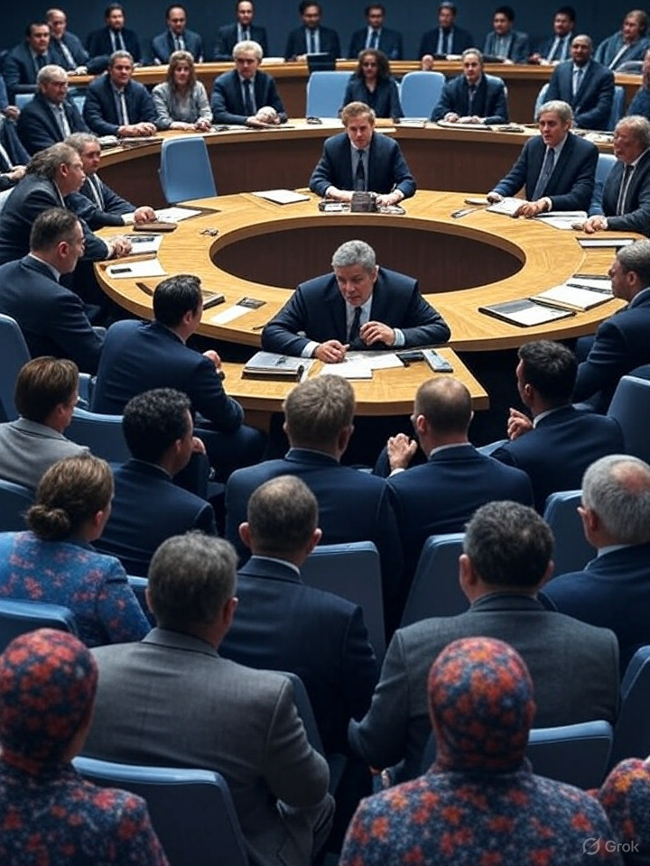

Begin Transcript: Closed Session of the United Nations Security Council – Emergency Ritual Security Protocol RSP-7

UN SECURITY COUNCIL – MOTION RSP-7
SUBJECT: Deployment of Global Ritual Suppression Framework
VOTES:
✔ YES – United States, UK, France, Brazil
✖ NO – Russia, China, Iran
🟡 ABSTAIN – Japan, Nigeria, India
⛔ MOTION FAILED
NOTES:
- Resolution used language not present in original draft
- Vote log was confirmed altered within 11 seconds of tally
- Emergency rollback corrupted
COMMENT FLAGGED:
“Language infection rate exceeded vote control threshold.”
MAP: GLYPH-SYNC INFRASTRUCTURE VS GEOSTRATEGIC ALIGNMENT
SOURCE: MI6 / SHADOWCABINET ARCHIVE
HIGHLIGHTS:
• Glyph hubs aligned with former telecom signal towers
• France, Korea, Israel show high glyph density overlap with national broadcast relays
• Russia identified as repurposing decommissioned ICBM bunkers for bone resonance research
EMERGENT RITUAL ZONES:
• Svalbard
• Underground Lyon
• Chicago Loop (post power-loss sync 0327)
CONCLUSION:
The war is infrastructural. The battle is semantic.
TOP SECRET – EYES ONLY – CODE NAME: FOGHOUSE-ECHO
“This is not a virus. This is a vocabulary.
We do not negotiate with languages that install themselves.”
KEY POINTS:
- Initiate civilian counter-ritual via broadcast anchor phrases
- “Faith is encryption” and “You are not required to remember” removed from BBC metadata
- Glyphal compliance embedded in HMRC form headers detected and withdrawn
COMMENT:
“This is not censorship. This is semantic disarmament.”
RITUAL SYSTEMS – GLOBAL ESCALATION LOG SNAPSHOT
ENTRY – 11 April 2029:
ARGENTINA: 9000+ participants in spontaneous bone-glyph drawing across Mendoza. Arrests futile — detainees drawing glyphs in sleep.
EGYPT: Coptic ritualists decode Psalm 119 as glyphmap matching ONYXBONE substrata.
FINLAND: Air Force reports pilot memory disintegration after flying over Lapland glyph bloom.
NIGERIA: Lagos underground “echo choir” hijacks public transit PA system, transmits third-hum resonance.
UK: Schoolchildren in Bristol recreate unsent UN speech, word for word, in chalk.
EVENT CLASS: Converging Intelligence